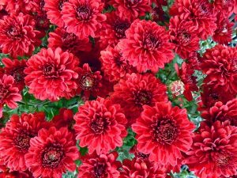
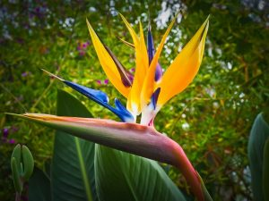
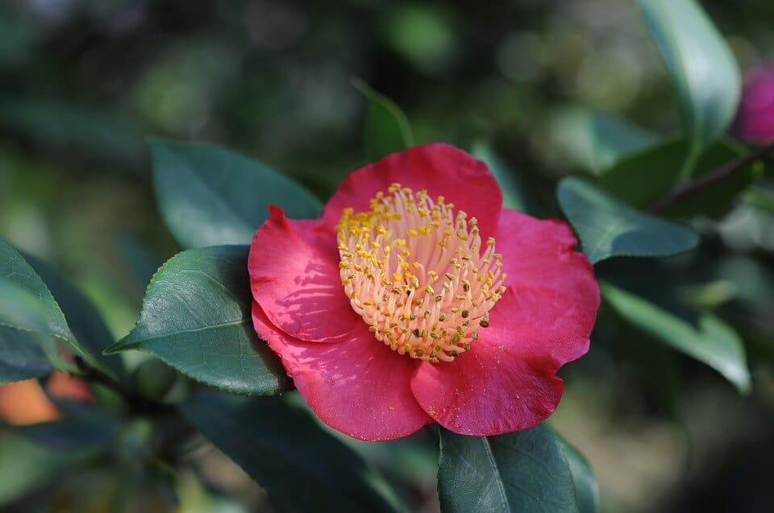
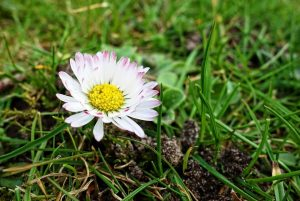
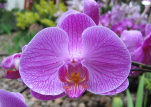
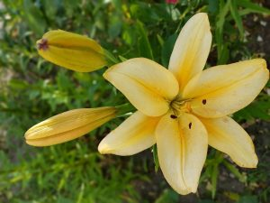
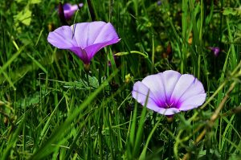
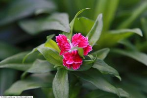

| GIRASOLES | CRISANTEMOS | AVE DEL PARAISO | CALENDULAS | CAMELIAS |
|  |  | |
 | |
| FLOR DE LOTO | DALIAS | ROSAS | TULIPANES | MARACUYÁ |
|
||||
| MARGARITAS | ORQUIDEAS | LIRIOS | CORAZON SANGRANTE | CAMPANILLAS |
|  |  |  |  | |
| CLAVELES | FLORES DEL CEREZO | HORTENSIAS | LAVANDAS | AZALEAS |
|  | ||||
| PEONÍAS | NARCISOS | DIENTE DE LEÓN | BEGONIAS | CICLAMEN |